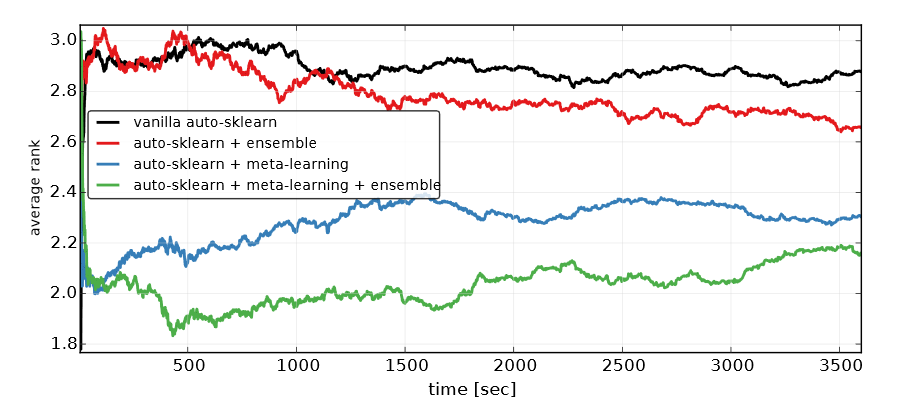

Part 4 Proposed interface for supervised learning
Okay, now that we’ve taken a look at some interfaces and how they well they match up with the model/model family conception of modelling, let’s imagine an interface that makes operations on model and model familys feel natural in R.
4.1 What we want out of a modelling interface
- Scientists can provide smart cross-validation schemes when appropriate
- Users can easily select and interchange hyperparameter selection methods or specify their own
- Because hyperparameter / modelling technique specific settings are handled with reasonable defaults, users can easily work with large numbers of models are the same time via a consistent and unified interface
- Ensembling is easy (in particular, I think we want it to be easy to build
SuperLearnerbased packages off the provided model objects) - Tidy and pipeable data structures
- Work primarily with
model familyobjects, where hyperparameter selection is abstracted as far away from the user as possible. The less time users have to spend writing the same old hyperparameter optimization code, the easier it is for them to fall into the pit of success. - Provide metalearned hyperparameter values like
auto-sklearndoes (i.e. default hyperparameter search starts with hyperparameters known to work well on similar datasets)

Since the Scikit-Learn interface is likely the most uniform and wide known interface, I think it’s a good idea to use language from Scikit-Learn as much as possible.
4.2 Model Instantiation
Let’s demonstrate a potential interface assuming we’d like to use KNN.
In terms of implementation, I think things will be easiest if each model has a dedicated object initialization function. This function should return an object of class "knn".
knn <- new_knn() # instantiation functions need a better nameBut since the current paradigm in R doesn’t involve instantiating model objects before fitting them, I think it would also be good to provide a wrapper called knn that first creates a knn object and then fits it. That is
knn_family <- knn(design, data)would be equivalent to
knn <- new_knn()
knn_family <- fit(knn, design, data)
# or, with pipes
knn_family <- new_knn() %>%
fit(design, data)where design/data is some combination of:
- X, y (matrix, vector)
- formula, data frame
- recipe, data frame
4.3 Model fitting
Model fitting is the most important and most complex part of the interface, and this is where I’m least happy with what’s I’ve come up with at the moment. To fit a model, we need to specify:
- A design matrix and data
- A hyperparameter space
- A hyperparameter search algorithm
- A resampling/performance assessment strategy
I believe each of these is a major component that deserves it’s own object. The recipes package deals with specifying data design.
There are several R packages that allow for specification of a hyperparameter space, such as mlr/mlrMBO (details here). The tools there provide seem quite useful, but again I’m not a fan of the interface. There are a huge number of packages that do this in Python though, for example Spearmint.
For now, I’ll pretend hp_space() generates a reasonable hyperparameter space object, and that gaussian_process_opt() is a search strategy that knows how to interface with hp_space objects.
I’ll also assume that there is an rsample_spec object that specifies a resampling strategy and some performance metric used to determine which model has the best performance. Maybe this would turn out to be a combination of an rsample::rset generator with a scoring function.
To fit a model object, we could then do any of the following, returning an object of class knn_model
knn_model <- knn(design, data, hp_space(k = 13, metric = "euclidean"))
knn_model <- fit(new_knn(), design, data,
hp_space = hp_space(k = 13, metric = "euclidean"))
knn_model <- new_knn() %>%
add_design(recipe, data) %>%
add_hp_space(k = 13, metric = "euclidean") %>%
fit()Since we are fitting a model rather than model_family here we don’t need to specify a hyperparameter search algorithm or a performance assessment specification.
That is, you get a model back when there is a single set of hyperparameters in the hp_space and a model_family anytime the hp_space specifies multiple/infinite hyperparameter combinations.
To fit model_family objects, the following would be equivalent
knn_family <- knn(design, data)
# and showing default arguments
knn_family <- fit(new_knn(), design, data,
hp_space = default_knn_hp_space,
hp_strategy = gaussian_process_opt,
resampling_strategy = default_rset_specification)For users departing from the defaults, this might look like
hyperparams <- hp_space(k = 3:4, metric = c("euclidean", "manhattan"))
resamp_spec <- resampling_spec(score = "mae", sampling = "bootstrap", reps = 10)
knn_family <- new_knn() %>%
add_design(recipe, data) %>%
add_hp_space(hyperparams) %>%
add_hp_search(hyperband) %>%
add_resampling(resamp_spec) %>%
fit()If you wanted to do inference on the best model in knn_family, you could get it with
best_knn_model <- extract_model(knn_family)This still leaves out a bunch of details. For example (I’ll update the list below as I think of more things):
- Observation weights and offsets. My thought is that
recipesshould handle this. - A subset of the data to work on. Again,
recipesshould handle this to separate modelling fitting and data preprocessing.
4.4 Prediction
Default predict methods should always return predictions of the same type as the input data. That is, if you specify a numeric outcome, you get a numeric prediction, if you specify a factor outcome, you get a factor prediction. This makes it easy for users to assess model performance, which is probably the first thing you want to do do after predicting.
This would look like
predictions <- predict(knn_family, newdata)
predictions <- predict(best_knn_model, newdata)For sanity and consistency with Scikit-Learn, I think it would be good to add a new generic predict_proba to get class probabilities for classification problems
class_probs <- predict_proba(knn_family, newdata)4.5 Ensembling
I also think the following would highly increase usability
bagged_model <- bag(new_lasso(), new_ridge(), new_ols(), n = 50)
stacked_model <- stack(new_lasso(), new_ridge(), new_ols(),
metalearner = new_glm())
boosted_model <- boost(new_lasso(), new_ridge(), new_ols(), loss = "some_loss")I’m not sure if bagged_model, stacked_model and boosted_model are models or model_familys, or something else entirely.